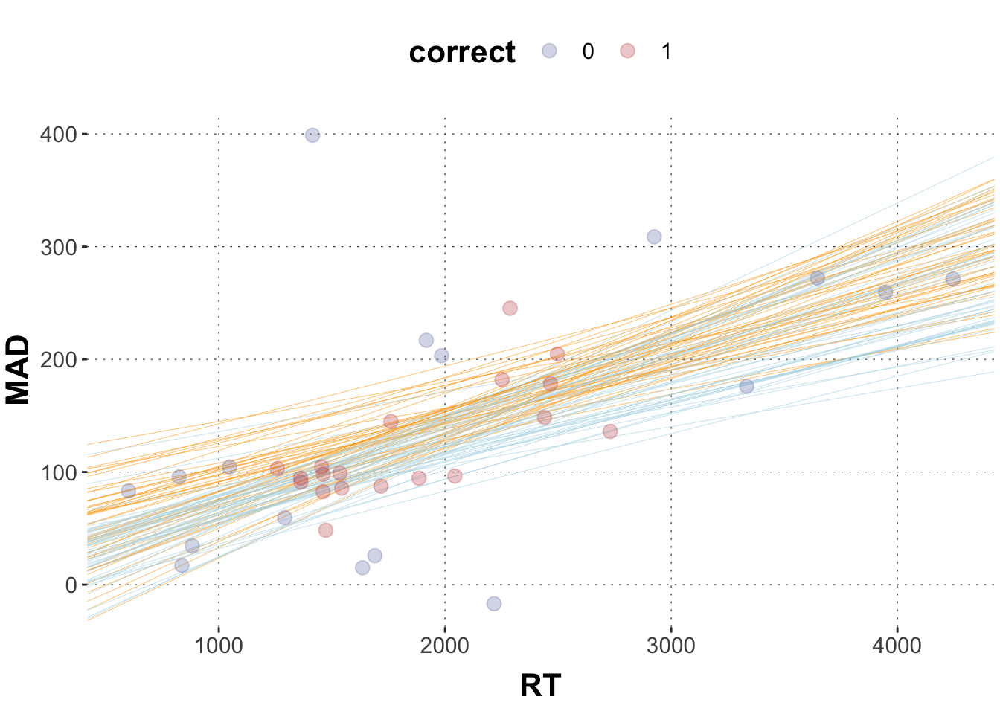
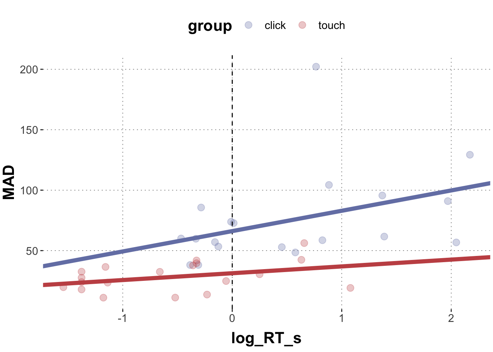
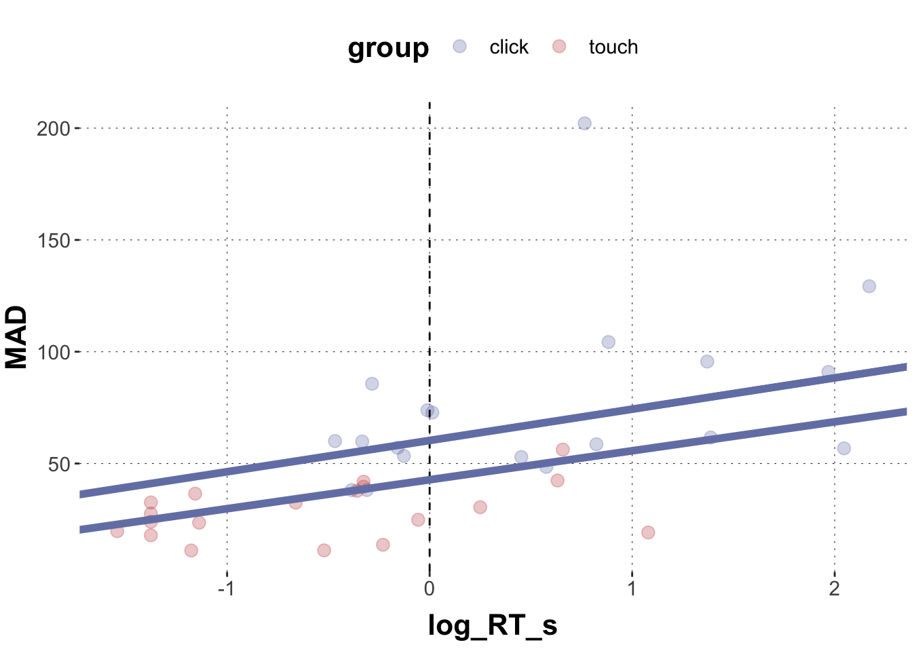

Here is code to load (and if necessary, install) required packages, and to set some global options (for plotting and efficient fitting of Bayesian models).
Toggle code
# install packages from CRAN (unless installed)pckgs_needed <-c("tidyverse","brms","rstan","rstanarm","remotes","tidybayes","bridgesampling","shinystan","mgcv")pckgs_installed <-installed.packages()[,"Package"]pckgs_2_install <- pckgs_needed[!(pckgs_needed %in% pckgs_installed)]if(length(pckgs_2_install)) {install.packages(pckgs_2_install)} # install additional packages from GitHub (unless installed)if (!"aida"%in% pckgs_installed) { remotes::install_github("michael-franke/aida-package")}if (!"faintr"%in% pckgs_installed) { remotes::install_github("michael-franke/faintr")}if (!"cspplot"%in% pckgs_installed) { remotes::install_github("CogSciPrag/cspplot")}# load the required packagesx <-lapply(pckgs_needed, library, character.only =TRUE)library(aida)library(faintr)library(cspplot)# these options help Stan run fasteroptions(mc.cores = parallel::detectCores())# use the CSP-theme for plottingtheme_set(theme_csp())# global color scheme from CSPproject_colors = cspplot::list_colors() |>pull(hex)# names(project_colors) <- cspplot::list_colors() |> pull(name)# setting theme colors globallyscale_colour_discrete <-function(...) {scale_colour_manual(..., values = project_colors)}scale_fill_discrete <-function(...) {scale_fill_manual(..., values = project_colors)}
We want to regress log(RT) against the full combination of categorical factors group, condition, and prototype_label.
log(RT) ~ group * condition * prototype_label
The research hypotheses we would like to investigate are:
Typical trials are faster than atypical ones.
CoM trials are slower than the other kinds of trials (straight and curved) together, and respectively.
‘straight’ trials are faster than ‘curved’ trials.
Click trials are slower than touch trials.
But for this to work (without at least mildly informative priors), we would need to have a sufficient amount of observations in each cell. So, let’s check:
So, there are cells for which we have no observations at all. For simplicity, we therefore just lump all “change of mind”-type trajectories into one category:
tidybayes::gather_draws(fit, `b_.*`, regex =TRUE) |>filter(.variable !="b_Intercept") |>ggplot(aes(y = .variable, x = .value)) + tidybayes::stat_halfeye() +labs(x ="", y ="") +geom_segment(x =0, xend =0, y =Inf, yend =-Inf,lty ="dashed")
The default cell is for click-atypical-straight. The coeffiencents with 95% CIs that do not include zero are: grouptouch, conditionTypical, prototype_labelCoM. None of these give us direct information about our research hypotheses.
Exercise 1c
Use the faintr package to get information relevant for the current research hypotheses. Interpret each result with respect to what we may conclude from it.
Solution
Toggle code
# 1. Typical trials are faster than atypical ones.# -> There is overwhelming evidence that this is true# (given the data and the model).faintr::compare_groups( fit,lower = condition =='Typical',higher = condition =='Atypical')
# 2. CoM trials are slower than the other kinds of trials# (straight and curved) together, and respectively.# -> There is overwhelming evidence that this is true# (given the data and the model).faintr::compare_groups( fit,lower = prototype_label !='CoM',higher = prototype_label =='CoM')
# 3. 'straight' trials are faster than 'curved' trials.# -> There is no evidence for this hypothesis# (given the data and the model).faintr::compare_groups( fit,lower = prototype_label =='straight',higher = prototype_label =='curved')
# 4. Click trials are slower than touch trials.# -> There is overwhelming evidence that this is true# (given the data and the model).faintr::compare_groups( fit,lower = group =='touch',higher = group =='click')
Outcome of comparing groups:
* higher: group == "click"
* lower: group == "touch"
Mean 'higher - lower': 0.2014
95% HDI: [ 0.1393 ; 0.2591 ]
P('higher - lower' > 0): 1
Posterior odds: Inf
Create a new data frame that contains only the mean values of the RT, and MAD for each animal (exemplar) and for correct and incorrect responses. Print out the head of the new data frame.
Solution
Toggle code
# aggregatedolphin_agg <- dolphin |>group_by(exemplar, correct) |> dplyr::summarize(MAD =mean(MAD, na.rm =TRUE),RT =mean(RT, na.rm =TRUE))# let's have a lookhead(dolphin_agg)
Run a linear regression using brms. MAD is the dependent variable (i.e. the measure) and both RT and correct are independent variables (MAD ~ RT + correct). (Hint: the coefficients might be really small, so make sure the output is printed with enough numbers after the comma.)
Try to understand the coefficient table. There is one coefficient for RT and one coefficient for correct which gives you the change in MAD from incorrect to correct responses.
Solution
Toggle code
# specify the model model2 =brm(# model formula MAD ~ RT + correct, # datadata = dolphin_agg )print(summary(model2), digits =5)
Family: gaussian
Links: mu = identity; sigma = identity
Formula: MAD ~ RT + correct
Data: dolphin_agg (Number of observations: 36)
Draws: 4 chains, each with iter = 2000; warmup = 1000; thin = 1;
total post-warmup draws = 4000
Population-Level Effects:
Estimate Est.Error l-95% CI u-95% CI Rhat Bulk_ESS Tail_ESS
Intercept 20.79434 35.89581 -49.21005 91.55819 1.00109 4216 2605
RT 0.06226 0.01510 0.03303 0.09186 1.00162 4327 3055
correct -14.31935 25.97257 -66.47573 35.52314 1.00129 5124 3410
Family Specific Parameters:
Estimate Est.Error l-95% CI u-95% CI Rhat Bulk_ESS Tail_ESS
sigma 77.58534 9.75040 61.26215 99.44962 1.00049 3951 2970
Draws were sampled using sampling(NUTS). For each parameter, Bulk_ESS
and Tail_ESS are effective sample size measures, and Rhat is the potential
scale reduction factor on split chains (at convergence, Rhat = 1).
Exercise 2c
Plot a scatter plot of MAD ~ RT and color code it for correct responses. (Hint: Make sure that correct is treated as a factor and not a numeric vector). Draw two predicted lines into the scatterplot. One for correct responses (“lightblue”) and one for incorrect responses (“orange”).
Extract the posteriors for the coefficients of both RT and correct from the model output (use the spread_draws() function), calculate their means and a 67% Credible Interval. Print out the head of the aggregated dataframe.
Solution
Toggle code
# get posteriors for the relevant coefficientsposteriors2 <- model2 |>spread_draws(b_RT, b_correct) |>select(b_RT, b_correct) |>gather(key ="parameter", value ="posterior")# aggregateposteriors2_agg <- posteriors2 |>group_by(parameter) |>summarise(mean_posterior =mean(posterior),`67lowerCrI`= HDInterval::hdi(posterior, credMass =0.67)[1],`67higherCrI`= HDInterval::hdi(posterior, credMass =0.67)[2] )# print outposteriors2_agg
Plot the scatterplot from 2c and plot 50 sample tuples for the regression lines for correct and incorrect responses.
Solution
Toggle code
# sample 50 random numbers from 4000 samplesrandom_50 <-sample(1:4000, 50, replace =FALSE)# wrangle data frameposteriors3 <- model2 |>spread_draws(b_Intercept, b_RT, b_correct) |>select(b_Intercept, b_RT, b_correct) |># filter by the row numbers in random_50slice(random_50)# plotggplot(data = dolphin_agg, aes(x = RT, y = MAD, color = correct)) +geom_abline(data = posteriors3,aes(intercept = b_Intercept, slope = b_RT), color ="orange", size =0.1) +geom_abline(data = posteriors3,aes(intercept = b_Intercept + b_correct, slope = b_RT), color ="lightblue", size =0.1) +geom_point(size =3, alpha =0.3)

Exercise 2f
Given our model and our data, calculate the evidence ratio of correct responses exhibiting larger MADs than incorrect responses. How would you interpret the result?
Solution
Toggle code
hypothesis(model2, 'correct > 0')
Hypothesis Tests for class b:
Hypothesis Estimate Est.Error CI.Lower CI.Upper Evid.Ratio Post.Prob Star
1 (correct) > 0 -14.32 25.97 -57.11 27.74 0.41 0.29
---
'CI': 90%-CI for one-sided and 95%-CI for two-sided hypotheses.
'*': For one-sided hypotheses, the posterior probability exceeds 95%;
for two-sided hypotheses, the value tested against lies outside the 95%-CI.
Posterior probabilities of point hypotheses assume equal prior probabilities.
Exercise 3: Metric and categorical variables, and their interaction
Here is an aggregated data set dolphin_agg for you.
Standardize (“z-transform”) log_RT such that the mean is at zero and 1 unit corresponds to the standard deviation. Name it log_RT_s. (Hint: use function scale().)
Plot MAD (y) against log_RT_s (x) in a scatter plot and color-code for group. Plot the regression lines for the click and the touch group into the plot and don’t forget to take possible interactions into account.
Solution
Toggle code
# extract posterior means for model coefficientsIntercept =summary(model1)$fixed[1,1]log_RT =summary(model1)$fixed[2,1]group =summary(model1)$fixed[3,1]interaction =summary(model1)$fixed[4,1]# plotggplot(data = dolphin_agg, aes(x = log_RT_s, y = MAD, color = group)) +geom_point(size =3, alpha =0.3) +geom_vline(xintercept =0, lty ="dashed") +geom_abline(intercept = Intercept, slope = log_RT, color = project_colors[1], size =2) +geom_abline(intercept = Intercept + group, slope = log_RT + interaction, color = project_colors[2], size =2)

Exercise 3d
Specify very skeptic priors for all three coefficients. Use a normal distribution with mean = 0, and sd = 10. Rerun the model with those priors.
Solution
Toggle code
# specify priorspriors_model2 <-c(set_prior("normal(0,10)", class ="b", coef ="log_RT_s"),set_prior("normal(0,10)", class ="b", coef ="grouptouch"),set_prior("normal(0,10)", class ="b", coef ="log_RT_s:grouptouch"))# modelmodel2 =brm( MAD ~ log_RT_s * group, data = dolphin_agg,prior = priors_model2 )
Exercise 3e
Compare the model output of model1 to model2. What are the differences and what are the reasons for these differences?
Solution
Toggle code
# We can compare the model predictions by looking at the coefficients / plotting them:summary(model1)
Family: gaussian
Links: mu = identity; sigma = identity
Formula: MAD ~ log_RT_s * group
Data: dolphin_agg (Number of observations: 38)
Draws: 4 chains, each with iter = 2000; warmup = 1000; thin = 1;
total post-warmup draws = 4000
Population-Level Effects:
Estimate Est.Error l-95% CI u-95% CI Rhat Bulk_ESS Tail_ESS
Intercept 66.15 7.41 51.48 80.53 1.00 2963 2945
log_RT_s 16.82 7.47 2.00 31.35 1.00 2372 2330
grouptouch -34.83 10.76 -55.23 -13.49 1.00 3342 3027
log_RT_s:grouptouch -11.18 11.35 -32.89 10.89 1.00 2557 2314
Family Specific Parameters:
Estimate Est.Error l-95% CI u-95% CI Rhat Bulk_ESS Tail_ESS
sigma 27.69 3.28 22.26 35.08 1.00 2972 2723
Draws were sampled using sampling(NUTS). For each parameter, Bulk_ESS
and Tail_ESS are effective sample size measures, and Rhat is the potential
scale reduction factor on split chains (at convergence, Rhat = 1).
Toggle code
summary(model2)
Family: gaussian
Links: mu = identity; sigma = identity
Formula: MAD ~ log_RT_s * group
Data: dolphin_agg (Number of observations: 38)
Draws: 4 chains, each with iter = 2000; warmup = 1000; thin = 1;
total post-warmup draws = 4000
Population-Level Effects:
Estimate Est.Error l-95% CI u-95% CI Rhat Bulk_ESS Tail_ESS
Intercept 60.18 6.02 47.86 71.63 1.00 3871 2906
log_RT_s 13.88 5.23 3.48 24.24 1.00 3572 2841
grouptouch -17.59 7.46 -31.87 -2.83 1.00 3830 2933
log_RT_s:grouptouch -1.03 7.05 -14.70 12.96 1.00 3809 2589
Family Specific Parameters:
Estimate Est.Error l-95% CI u-95% CI Rhat Bulk_ESS Tail_ESS
sigma 28.55 3.61 22.56 36.91 1.00 3522 2768
Draws were sampled using sampling(NUTS). For each parameter, Bulk_ESS
and Tail_ESS are effective sample size measures, and Rhat is the potential
scale reduction factor on split chains (at convergence, Rhat = 1).
Toggle code
# extract posterior means for model coefficientsIntercept =summary(model2)$fixed[1,1]log_RT =summary(model2)$fixed[2,1]group =summary(model2)$fixed[3,1]interaction =summary(model2)$fixed[4,1]# plotggplot(data = dolphin_agg, aes(x = log_RT_s, y = MAD, color = group)) +geom_point(size =3, alpha =0.3) +geom_vline(xintercept =0, lty ="dashed") +geom_abline(intercept = Intercept, slope = log_RT, color = project_colors[1], size =2) +geom_abline(intercept = Intercept + group, slope = log_RT + interaction, color = project_colors[1], size =2)

The magnitude of the coefficients is much smaller in model2, with the interaction term being close to zero. As a result, the lines in the plot are closer together and run in parallel. The reason for this change lies in the priors. We defined the priors of model2 rather narrowly, down-weighing data points larger or smaller than zero. This is a case of the prior dominating the posterior.